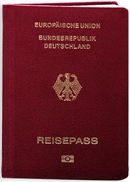

<div class="container passport frame x-padding">
  <div class="row frame-to-reverse">
    <div class="col-md-6 padding-right description-xs">
      <h1 style="margin-top:90px">Wenn der Postmann nie mehr klingelt</h1>
      <p style="margin-top:35px">
        Das ist ein Blindtext. Thema Convenience. Deine Post ist immer bei dir.
        Auf dem Smartphone, oder dem Laptop. Verliere nie wieder die Übersiht
        über deine Post. Alles ist archiviert und geht nicht verloren.
        Paktisch oder?
      </p>
    </div>
    <div class="col-md-6">
      
      
    </div>
  </div>
</div>
